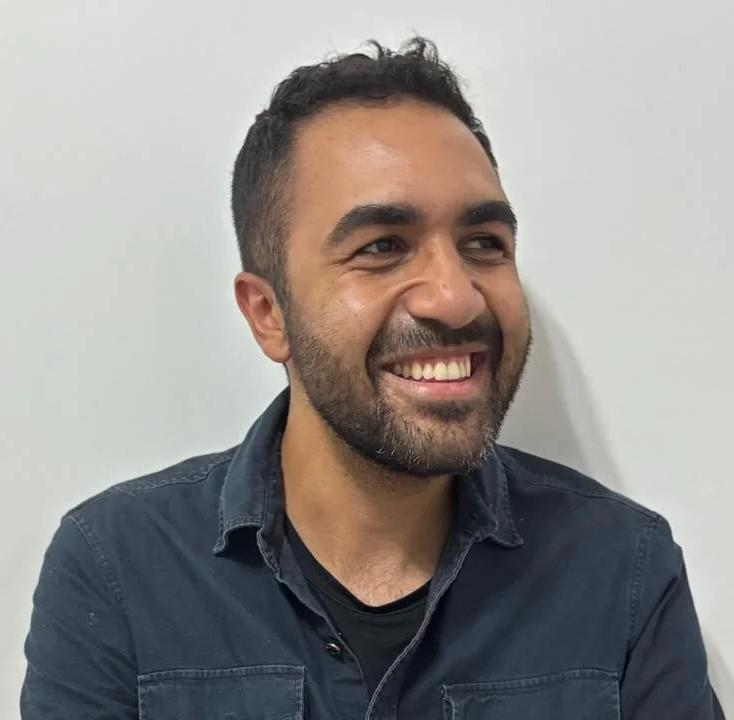

Mais de 120 aprovações em ETECs e Instituto Federal com uma preparação estratégica, humana e acessível.
Quero estudar no GaivotaMais de 120 alunos aprovados em ETECs e Instituto Federal ao longo de oito anos.
Apostilas impressas, exercícios de provas anteriores e atividades online.
Aulas dinâmicas, atividades práticas e resolução estratégica de exercícios.
Simulados, plantões de dúvidas e acompanhamento próximo durante toda a preparação.
Preparar estudantes para os principais vestibulinhos da ETEC e do Instituto Federal por meio de uma metodologia ativa, acolhedora e estratégica.
No Gaivota, o aluno desenvolve interpretação, raciocínio lógico, autonomia nos estudos e confiança para enfrentar desafios acadêmicos.
Aqui, o estudante aprende com clareza, evolui com segurança e ganha autonomia.
Um processo pensado para transformar aprendizado em evolução real.
O aluno participa do processo por meio de atividades práticas, resolução de problemas e trabalhos colaborativos.
Professores experientes conduzem aulas leves, interativas e focadas no aprendizado real.
Simulados frequentes ajudam no controle da ansiedade, concentração e adaptação ao modelo das provas.
Plantões de dúvidas presenciais e online, além de suporte próximo via WhatsApp.
Mais do que preparar para uma prova, formamos estudantes mais seguros e independentes.
Conteúdo direcionado para vestibulinhos da ETEC e Instituto Federal.
Técnicas adaptadas ao perfil de cada aluno para fortalecer autonomia e confiança.
Organização de resumos semanais para acompanhar a evolução contínua.
Comunicação direta com os responsáveis para acompanhar desenvolvimento e desempenho.
O vestibulinho exige muito mais do que decorar conteúdos. É preciso interpretar, organizar ideias e resolver questões com estratégia e confiança.
O objetivo não é apenas fazer prova.
É aprender de verdade.
Experiência, acolhimento e compromisso com a educação.

Biólogo formado pela Universidade Presbiteriana Mackenzie e especialista em Ensino de Ciências pela Faculdade SESI-SP.
“Esse curso superou todas minhas expectativas.”
Fiz o curso de preparação pra Etec e instituto federal com o professor Finatti em 2024. Esse curso me ajudou tanto no preparo com os estudos e nas provas, como na motivação e disciplina. Esse curso superou todas minhas expectativas e foi mais que um ensino. Recomendo muito para quem não tem um caminho para estudos ou que não sabe onde começar a estudar para se preparar para a prova da Etec e Instituto Federal, porque você receberá um preparo excepcional.
“Foi um dos grandes responsáveis pela minha aprovação.”
Tive a oportunidade de participar do curso de preparação para a Etec e o IF, com o professor Finatti, em 2024. Sem dúvida, ele foi um dos grandes responsáveis para que eu conquistasse a vaga na Etec. Desde o início, quando eu ainda não sabia nem por onde começar, ele me guiou com muita dedicação. Esse curso não apenas me proporcionou um ótimo desempenho nas provas, mas também me ensinou importantes lições sobre disciplina e motivação que levarei para a vida. Recomendo esse curso a todos que desejam se preparar de verdade, ao lado de um professor inspirador e muito mais que competente.
“Consegui entrar na escola que eu sempre sonhei estudar.”
so preparatório para Etec com o professor Finatti em 2023, e no começo de 2024 veio a minha aprovação. Graças ao professor Luiz Finatti eu consegui entrar na escola que eu sempre sonhei estudar. Ele é um ótimo profissional, muito dedicado ao que faz, e que claramente faz com amor. Um profissional excepcional. Sua didática é muito boa e além de ensinar muito bem as matérias, ele nos ajuda em em relação ao curso, as escolas. A época do cursinho foi uma das melhores da minha vida pessoal e didática, e me trouxe frutos muito bons.
“Um ambiente onde o professor realmente incentiva e acredita no potencial dos alunos.”
Agradeço ao Professor Finatti e seu projeto incrível, que foi essencial para minha aprovação na Etec. O curso me preparou para o vestibulinho e outros desafios, como o Enem, com aulas didáticas, completas e de fácil entendimento. Temas difíceis, como regra de 3, se tornaram simples graças às explicações claras e exemplos práticos. O curso vai além do básico, com conteúdos aprofundados e um ambiente onde o professor realmente incentiva e acredita no potencial dos alunos. Foi uma experiência transformadora que recomendo a todos que buscam alcançar seus objetivos.
O Cursinho Gaivota funciona dentro da Faculdade Flamingo, em uma região de fácil acesso, bem conhecida e próxima a pontos de referência.
Venha estudar em um ambiente acolhedor, estratégico e preparado para desenvolver seu potencial.